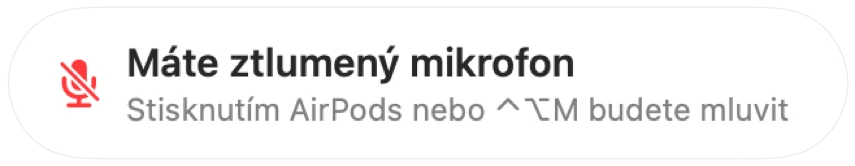

Upozornění „Máte ztlumený mikrofon“ pro každý hovor
Zoom vás sice upozorní, když mluvíte se ztlumeným mikrofonem, ale většina ostatních aplikací ne a webové videohovory téměř nikdy. Minutu něco vysvětlujete a pak zjistíte, že na vás všichni čekají.
Muffle sleduje řeč, i když máte mikrofon ztlumený, a zobrazí připomenutí v jakékoli aplikaci. Pokud hovor probíhá přes AirPods nebo headset, poslouchá vestavěný mikrofon Macu, a to pouze jeho hlasitost. Nic se nenahrává.
Zapněte připomenutí
- 1
Nainstalujte Muffle a povolte přístup k mikrofonu.
- 2
Ujistěte se, že je v okně Nastavení Muffle zapnutá volba „Připomenout, když mluvím se ztlumeným mikrofonem“.
- 3
Připojte se k hovoru přes AirPods nebo headset a ztlumte mikrofon.
- 4
Začněte mluvit. Objeví se připomenutí „Máte ztlumený mikrofon“.

- Připojujete se k hovoru a mikrofon máte stále ztlumený z minula? Muffle vás upozorní hned při začátku hovoru.
- Psaní na klávesnici připomenutí nespustí. Zareaguje pouze na souvislou řeč.
Časté dotazy
Funguje připomenutí i s vestavěným mikrofonem Macu?
Funguje, když hovor probíhá přes AirPods nebo headset. Pokud hovor používá přímo mikrofon Macu, je tento mikrofon ztlumený a nemůže vás slyšet.
Nahrává se můj hlas?
Ne. Muffle měří pouze hlasitost a nikdy žádný zvuk neukládá ani neodesílá.